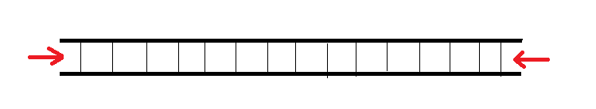
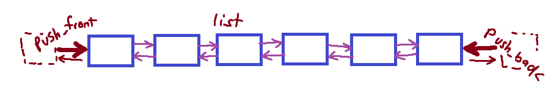
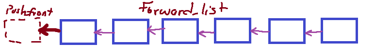
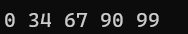
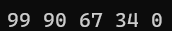
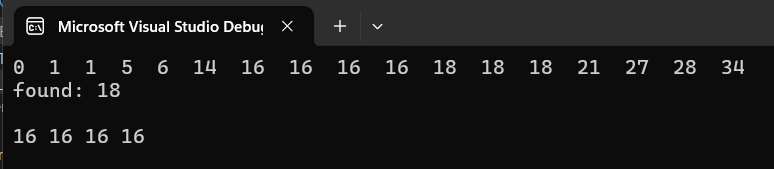

Standard Template Library in C++
Introduction
| Sequence | Header |
|---|---|
array |
<array> |
vector |
<vector> |
list |
<list> |
deque |
<deque> |
forward_list |
<forward_list> |
set, multiset |
<set> |
map, multimap |
<map> |
unordered_set, unordered_multiset |
<unordered_set> |
unordered_map, unordered_multimap |
<unordered_map> |
Standard Array Template std::array
Properties:
1. Thin Wrapper over C-style static array
2. Supports iterators
3. Knows about its size
4. provides random access
5. Can be used with C-FUNCTIONS
6. Cannot grow in size
#include <iostream>
#include <array>
void StdArray() {
// Initializing using STARDARD INITILIZER LIST
std::array<uint32_t, 6> scores = {35, 89, 15, 99, 56, 47};
// Initializing using UNIFORM INITIALIZATION
std::array<int, 8> usersNo {1, 4, 8, 16, 20, 32, 46, 64};
// accessing with [] operator
std::cout << scores[5] << std::endl;
// accessing element : for range loop
for (auto& el : scores)
std::cout << el << " ";
std::cout << "\n";
// Accessing element : for loop
for (int i = 0; i < usersNo.size(); i++){
std::cout << usersNo[i];
if (i != (usersNo.size() - 1)) std::cout << " => ";
}
}
int main() {
StdArray();
}
Standard Array Iterator
- This returns a pointer like object to the current
array - User can use this to access the elements by their position
- Iterator also provide overloaded operators such as
++,--and* - You can create it through
begin()andend()functions in all containers
Warning
Note that end() returns an Iterator that DOES NOT point to the array (points to memory beyond the array ) Therefore, never dereference an end() iterator.
void StdArrayIter() {
std::array<int, 8> usersNo = { 10, 4, 8, 16, 20, 32, 46, 64 };
// Returns pointer to the begin of the std::array
auto it = usersNo.begin();
std::cout << " Access element - *it " << *it << std::endl;
it++; // move to `4`
++it; // move to '8'
std::cout << " Access element - *it " << *it << std::endl;
it++;
--it; // go back to `8`
it--; // go back to `4`
std::cout << " Access element - *it " << *it << std::endl;
std::cout << "\nPrinting with while loop: \n";
while (it != usersNo.end()){
std::cout << *it << " ";
it++;
std::cout << "\n\n\n\n" ;
it = usersNo.begin();
std::cout << &it << std::endl;
std::cout << usersNo.data()<< std::endl;
}
Standard Vector Template std::vector
- Behaves like a dynamic array
- Grows automatically
- Efficient for addition/removal at the end
- Provides random access
- Not good for insertion/deletion
std::vector is basically a Queue - Expands from one end
#include <vector>
template <typename ... Param>
void print(Param... lst) {
((std::cout << lst << " "), ...);
std::cout << std::endl;
}
void StdVector() {
std::vector<int> xPos = {22, 33, 44, 55};
xPos.push_back(66);
xPos.push_back(77);
xPos.push_back(77);
std::cout << "\nIteration with for loop:\n";
for (int i = 0; i < xPos.size(); i++) std::cout << xPos[i] << " ";
std::cout << "\nIteration with for-range loop:\n";
for (auto& i : xPos) std::cout << i << " ";
std::cout << "\nIteration with `begin()`:\n";
auto it = xPos.begin();
while (it != xPos.end()) std::cout << *it++ << " ";
xPos.pop_back();
xPos.pop_back();
std::cout << "\n";
for (auto& i : xPos) std::cout << i << " ";
xPos.insert(xPos.begin(), { 34, 8, 23 }); // insert using init-list
xPos.insert(xPos.begin(), -101); // insert single element
xPos.insert(xPos.begin()+3, -33); // insert at index 3
vector<int> somNum1 = { 1, 3, 5 };
vector <int> somNum2 = { -7, -9, -11 };
// at the end() extend with content of `somNum1`
somNum1.insert(somNum1.end(), somNum2.begin(), somNum2.end()); // 1 3 5 -7 -9 -11
// at the end() insert count=5, value= ;20
somNum2.insert(somNum2.end(), 5, 20); //-7 -9 -11 20 20 20 20 20
std::cout << "\n";
for (auto& i : xPos) std::cout << i << " ";
xPos.erase(xPos.begin() + (xPos.size() - 1) / 2);
std::cout << "\n";
for (auto& i : xPos) std::cout << i << " ";
xPos.erase(xPos.end() - 3);
std::cout << "\n";
for (auto& i : xPos) std::cout << i << " ";
print(3, 4, 3, 78, "344in", 56.78);
}
int main() {
StdVector();
}
New in std:vector
int main() {
std::vector<int> vInt;
for (size_t i = 0; i < 20000; i++)
vInt.push_back(i);
std::cout << "\nSize: " << vInt.size() << "\n";
std::cout << "Capacity: " << vInt.capacity() << "\n";
//vInt.resize(10);
vInt.erase(vInt.begin(), vInt.end() - 10);
//vInt.shrink_to_fit();
std::cout << "\nAfter Erasing ...\n";
std::cout << "\nSize: " << vInt.size() << "\n";
std::cout << "Capacity: " << vInt.capacity() << "\n";
std::for_each(vInt.begin(), vInt.end(), [](int v) {
cout << v << " "; });
cout << "\n";
return 0;
}
Once we add Shrink_to_fit
All the reserved spaces were fitted to the size - (extra memory freed)
vInt.shrink_to_fit();
std::cout << "\nAfter Erasing ...\n";
std::cout << "\nSize: " << vInt.size() << "\n";
std::cout << "Capacity: " << vInt.capacity() << "\n";
Standard Deque std::deque
- Efficient for additional / Removal at both end
- Grows automatically just like vector
- Provides random access (
[]operator modify element) - NOT GOOD for insertion / deletion, except at both ends.
Basically what std::vector can do but with the extra of front operations

#include <iostream>
#include <deque>
void StdDeque() {
std::deque<int> songsFreq = {21, 31, 41, 55};
songsFreq.push_back(66);
songsFreq.push_back(77);
songsFreq.push_front(77);
songsFreq.push_front(12);
songsFreq[6] = 345;
std::cout << "\nIteration with for loop:\n";
for (int i = 0; i < songsFreq.size(); i++) std::cout << songsFreq[i] << " ";
std::cout << "\nIteration with for-range loop:\n";
// Iterating using for-range
for (auto& i : songsFreq) std::cout << i << " ";
// Iterating using `begin()`
std::cout << "\nIteration with `begin()`:\n";
auto it = songsFreq.begin();
while (it != songsFreq.end()) std::cout << *it++ << " ";
std::cout << "\nvalue `at` index 5 : =" << songsFreq.at(5) << std::endl;
songsFreq.pop_back();
songsFreq.pop_front();
std::cout << "\n";
for (auto& i : songsFreq) std::cout << i << " ";
songsFreq.insert(songsFreq.begin(), { 34, 8, 23 }); // insert using init-list
songsFreq.insert(songsFreq.begin(), -101); // insert single element
songsFreq.insert(songsFreq.begin()+3, -33); // insert at index 3
std::cout << "\n";
for (auto& i : songsFreq) std::cout << i << " ";
songsFreq.erase(songsFreq.begin() + (songsFreq.size() - 1) / 2);
std::cout << "\n";
for (auto& i : songsFreq) std::cout << i << " ";
songsFreq.erase(songsFreq.end() - 3);
std::cout << "\n";
for (auto& i : songsFreq) std::cout << i << " ";
}
int main() {
StdDeque();
}
Also about resize and reserve
std::vector<int> vInt;
//keeps memory space
vInt.reserve(10);
//keeps memory space and init them to 0
vInt.resize(20);
Standard List std::list / Forward list std::forward_list
List
- Implemented as two way linked list
- Efficient for insertion / deletion
-DOES NOT provide random accesss (NO
[]operator modify element)
Useful when you need a container that you will often insert and delete from FRONT/BACK

void List() {
std::list<float> lf;
// Populating value using loop
for (int i = 1; i < 8; i++)
lf.push_back(i * 11);
// Reading value using for-range
for (auto i : lf) cout << i << " ";
cout << endl;
lf.push_front(-11.0);
lf.push_front(-22.0);
for (auto i : lf) cout << i << " ";
cout << endl;
cout << "insert(..) ONLY at begin() and end() \n";
lf.insert(lf.begin(), 121);
lf.insert(lf.end(), 212);
for (auto i : lf) cout << i << " ";
cout << endl;
cout << "erase(..) \n";
lf.erase(lf.begin());
lf.pop_front();
for (auto i : lf) cout << i << " ";
cout << endl;
lf.pop_back();
for (auto i : lf) cout << i << " ";
cout << endl;
cout << "clear(..) \n";
lf.clear();
cout << "after clearing : ";
for (auto i : lf) cout << i << " ";
cout << endl;
}
int main() {
List();
}
Forward list
- Implemented as one way linked list
- Good for small memory foot print
- Efficient for insertion / deletion
- Does not provide support for size
- Elements are added at the front only

#include <forward_list>
void ForwardList() {
std::forward_list<float> fl;
fl.assign({ 34, 40.0f });
// Populating value using loop
for (int i = 1; i < 8; i++)
fl.push_front(i * 11);
// Reading value using for-range
for (auto i : fl) cout << i << " ";
cout << endl;
fl.push_front(-11.0);
fl.push_front(-22.0);
for (auto i : fl) cout << i << " ";
cout << endl;
fl.pop_front();
for (auto i : fl) cout << i << " ";
cout << endl;
cout << "clear(..) \n";
fl.clear();
cout << "after clearing : ";
for (auto i : fl) cout << i << " ";
cout << endl;
fl = { 33, 66, 99, 144,169 };
for (auto i : fl) cout << i << " ";
cout << "\n\n";
cout << "insert AFTER begin() : \n";
fl.insert_after(fl.begin(), 101);
for (auto i : fl) cout << i << " "; cout << "\n\n";
cout << "insert AFTER before_begin() : \n";
fl.insert_after(fl.before_begin(), 202);
for (auto i : fl) cout << i << " "; cout << "\n\n";
cout << "erase AFTER begin() : \n";
fl.erase_after(fl.begin());
for (auto i : fl) cout << i << " "; cout << "\n\n";
cout << "erase AFTER before_begin() : \n";
fl.erase_after(fl.before_begin());
for (auto i : fl) cout << i << " "; cout << endl;
}
int main() {
ForwardList();
}
standard Set std::set / Multiset std::multiset
- Implemented as a binary tree
- Elements are stored and sorted by (< or >)
- Values act as keys
- Fast for search
- No random access
- Elements cannot be modified
set/multset Inserting and Printing Output
First thing to note is that Set is printed in the sorted order
void Set0() {
std::set<int> scores;
scores.insert(34);
scores.insert(67);
scores.insert(90);
scores.insert(99);
scores.insert(0);
auto it = scores.begin();
// Element is printed in sorted order (less than by default)
for (auto i : scores) cout << i << endl;
}
Sort the set in the ascending order

But for you to sort by is greather than, you need to include std::greater which is found
in the <functional> header.
// Your new definition of scores with `std::greater<int>`
std::set<int, std::greater<int>> scores;
scores.insert(34);
scores.insert(67);
...
for (auto i : scores) cout << i << " ";
This sort the set in descending order

erase() and find() with Set
void Set1() {
std::set<string> students = { "Ngozi", "Fifa", "Ayomide", "Tolulope","Mustapha", "Bolanle"};
students.insert("Damilola");
students.insert("Zamani");
students.insert("Yetunde");
auto it = students.begin();
while (it != students.end()) cout << *it++ << " ";
cout << "\n";
/**
DOES NOT SUPPORT RANDOM ACCESS LIKE - vector, deque
cout << students[3] << endl;
*it = 12;
cout << *it+3 << endl;
*/
// Erases use the value itset as key or it
students.erase("Yetunde");
students.erase(students.begin());
for (auto& i : students){
cout << i << " ";
}
// Search returns the iterator to the key
auto itr_find = students.find("Zamani");
if (itr_find != students.end())
cout << "find: " << *itr_find << " found\n";
else
cout << "couldn't find zamani\n";
}
Working with multiset
The main difference for multiset is that it allows duplicate of value and you can
also find that duplicated values using equal_range.
void MultiSet() {
std::multiset<int> ages{ 5, 6,1, 16, 16, 18, 21, 34, 28, 27, 18, 18, 14 , 16, 0, 1, 16};
for (auto i : ages) cout << i << " ";
// to find multiple occurence of a value
auto itr_val = ages.find(18);
if (itr_val != ages.end())
cout << "\nfound: " << *itr_val << "\n\n";
// equal range return to iterators as std::pair
// first - is the iterator of the first found
// second - the iterator of the element after the last found
auto itr = ages.equal_range(16);
while (itr.first != itr.second)
cout << *itr.first++ << " " ;
cout << "\n";
}
int main() {
MultiSet();
}

Standard Map std::map / Multimap std::multimap
- Implemented as binary tree with Key/Value pair.
- The elements are arranged in sorted order based on the key values
- Best for search (its quite fast)
- No random access allowed (values are immutable)
- Keys cannot be modified directly
Insertion into a map
void Map() {
std::map<int, string> studentsInfo = {
{0xE1, "Omolara Olatunde"},
{0x11, "Segun Thompson"},
{0xff, "Afor Blessing"},
{0x8A, "Tunde Abolasade"}
};
// Insert using std::pair
studentsInfo.insert(std::pair<int, string>(0xAA, "Abah Inagwelu"));
studentsInfo.insert(std::pair<int, string>(0x12, "Odunayo Olaniyan"));
// Insert using std::make_pair
studentsInfo.insert(std::make_pair(0x22, "Funmilola Omololu"));
studentsInfo.insert(std::make_pair(0x15, "Omoriege Sharon"));
// Insert using square bracket operator []
studentsInfo[0x90] = "Adebimpe Oluwashina";
studentsInfo[0xAA] = "Kelechukwu Nnamani";
for (auto& i : studentsInfo)
cout << std::hex << i.first << " : " << i.second << "\n";
cout << "\n";
}
Sorting the map base on value
The work around here is to flip the map so that the key becomes the value and vice versa
template<typename A, typename B>
std::pair<B, A> flip_pair(const std::pair<A, B>& p)
{
return std::pair<B, A>(p.second, p.first);
}
template<typename A, typename B>
std::multimap<B, A> flip_map(const std::map<A, B>& src)
{
std::multimap<B, A> dst;
std::transform(src.begin(), src.end(), std::inserter(dst, dst.begin()),
flip_pair<A, B>);
return dst;
}
// Usage
void Map{
std::map<int, string> studentsInfo = {
{0xE1, "Omolara Olatunde"},
...}
...
std::multimap<string, int> dst = flip_map(studentsInfo);
for (auto& i : dst)
cout << std::hex << i.first << " : " << i.second << "\n";
}
Modify & Erase
// Modify Value
studentsInfo[0x11] = "Mustapha Al Nurudeen";
for (auto& i : studentsInfo) cout << std::hex << i.first << " : " << i.second << "\n";
cout << "\n";
// Erase by Key
studentsInfo.erase(0xAA);
for (auto& i : studentsInfo) cout << std::hex << i.first << " : " << i.second << "\n";
cout << "\n";
// Erase at begin()
studentsInfo.erase(studentsInfo.begin());
for (auto& i : studentsInfo) cout << std::hex << i.first << " : " << i.second << "\n";
cout << "\n";
Find and Iterator loop
// Searching through map
auto itr = studentsInfo.find(0x90);
if (itr != studentsInfo.end())
cout << "FOUND : " << itr->second << "\n\n";
else
cout << "Value not found\n\n";
auto it = studentsInfo.begin();
while (it != studentsInfo.end()){
cout << it->first << " => " << it->second << "\n";
it++;
}
Working with std::multimap
This is similar to the multiset that it supports same key input and usage of equal_range function.
void MultiMap() {
std::multimap <int, string> usersAddr{ {2, "Manny"},{ 5, "Bongo"},{ 1, "Fanaty"}, {2, "Olorunsogo"}, {2, "Jobak"}};
for (auto i : usersAddr){
cout << i.first << " " << i.second << "\n";
}
}
with using equal_range
void MultiMap() {
std::multimap <int, string> usersAddr{ {2, "Manny"},{ 5, "Bongo"},{ 1, "Fanaty"}, {2, "Olorunsogo"}, {2, "Jobak"}};
for (auto i : usersAddr){
cout << i.first << " " << i.second << "\n";
}
// Using equal range
auto itr = usersAddr.equal_range(2);
cout << "\nFOUND EQUAL RANGE: \n";
while (itr.first != itr.second){
cout << itr.first->first << " = " << itr.first->second << endl;
itr.first++;
}
}
MACRO to print variable name
Unordered containers
- Associative containers implemented as hash tables
- Values are hashed and stored in undefined order
- Fast search, insertion/deletion but may degrade over a period of time
std::unordered_setstores values that act as keys for hashingstd::unoredered_mapstores pairs (first is used to compute hash)- Iterators are constant
Unordered set
#include <unordered_set>
void UoSet() {
std::unordered_set<std::string> sups;
sups.insert("Hulk");
sups.insert("Batman");
sups.insert("Bayrun");
sups.insert("touchgirl");
sups.insert("Novacaine");
sups.insert("NightCrawler");
sups.insert("Superman");
sups.insert("ReverseFlash");
// once the number of element passes 8 the bucket count changes from 8 to 64
sups.insert("Flash");
for (auto& i : sups) {
cout << "Bucket #" << sups.bucket(i) <<" ==> " << i << endl;
}
cout << "\nBucket count: " << sups.bucket_count() << endl;
cout << "Number of elements: " << sups.size() << endl;
cout << "Load factor: " << sups.load_factor() << endl;
}
Unorder multiset allows duplicate
Unordered Map
#include <unordered_map>
void UoMap() {
std::unordered_map<int, string> powerUsers;
powerUsers.insert(std::make_pair(20000, "Spiderman"));
powerUsers.insert(std::make_pair(400000, "Superman"));
powerUsers.insert(std::make_pair(5670, "Hawkeye"));
powerUsers.insert(std::make_pair(350000, "Hulk"));
powerUsers.insert(std::pair<int, string>(6500, "Romanoff"));
powerUsers.insert(std::pair<int, string>(390000, "SheHulk"));
powerUsers[12000] = "Dr. Strange";
powerUsers[22110] = "Capt. America";
powerUsers[25110] = "Capt. Carter";
for (auto i : powerUsers) {
cout << "Bucket #" << powerUsers.bucket(i.first)<< " ==> " << i.first <<", "<< i.second << endl;
}
cout << "\nBucket count: " << powerUsers.bucket_count() << endl;
cout << "Number of elements: " << powerUsers.size() << endl;
cout << "Load factor: " << powerUsers.load_factor() << endl;
}
Hash function
#include <iostream>
#include <unordered_set>
using std::cout, std::endl, std::string;
struct EmpHash {
size_t operator() (const Employee& emp) const {
auto s1 = std::hash<string>{}(emp.GetName());
auto s2 = std::hash<int>{}(emp.GetId());
return s1 ^ s2;
}
};
struct EmpEquality {
bool operator()(const Employee& e1, const Employee& e2) const {
return e1.GetId() == e2.GetId() && e1.GetName() == e2.GetName();
}
};
class Employee {
string mName;
int mId;
public:
Employee(const string& n, int id): mName(n), mId(id){}
const string& GetName() const { return mName; }
int GetId() const { return mId; }
};
void Hashes() {
std::hash<std::string> h;
cout << "Hash: " << h("Hello") << endl;
std::unordered_set<Employee, EmpHash, EmpEquality> emps;
emps.insert(Employee{ "Segun", 0x1201});
emps.insert(Employee{ "Omotosho", 1011});
emps.insert(Employee{ "Balogun", 0x1202});
for (auto& x : emps){
cout << x.GetId() << " " << x.GetName() << endl;
}
}
int main() {
Hashes();
return 0;
}
Algorithms
- STL Provides algorithms for common tasks
- sorting items
- Removing items
- Searching items
-
many other numeric operations
-
More optimized than handwritten loops
-
Work with all containers regardless of the data type
-
Several Algorithms can be customized through user-defined operations
- Some containers provide specialized versions of algorithms.
- list provides sort & remove
-
associative containers provide
lower_bound,upper_bound,findetc. -
Most algorithms reside in
<algorithm>header
Sorting algorithm with User Defined type vector and Working with User Defined set
#include <iostream>
#include <algorithm>
#include <vector>
#include <set>
class Employee {
string mName;
int mId;
string mProgLang;
public:
Employee(const string& n, int id, const string& p)
:mName(n), mId(id), mProgLang(p){}
const string& GetName() const { return mName; }
int GetId() const { return mId; }
const string GetProgLang() const { return mProgLang; }
// ### SET METHOD 1 - overload the `<` less in the class
//bool operator < (const Employee& e)const { return mId < e.mId; } // one way to pass less/greater
};
void UserDefinedVector() {
// Sorting with Vector
std::vector<Employee> v{
Employee("Oma", 5200, "Js"),
Employee{"Funmi", 2100, "Rust"},
Employee{"Rodney", 3802, "C++"},
Employee{"Kemi", 6210, "Java"},
Employee{"Busayo", 4180, "Python"}
};
std::sort(v.begin(), v.end(),
// best way to pass less/greater
[](Employee& emp1, Employee& emp2) {return emp1.GetId() < emp2.GetId();
});
cout << "=== User defined Vector === \n";
for (auto& x : v)
cout << x.GetId() << " - " << x.GetName() << " - " << x.GetProgLang() << endl;
}
// ### SET METHOD 2 - overload the `()` in a `Compare`
struct EmpCompare {
bool operator () (const Employee& a1, const Employee& a2) const {
return a1.GetId() < a2.GetId();
}
};
void UserDefinedSet() {
// Sorting with Vector
std::set<Employee, EmpCompare> sl{
Employee("Oma", 5200, "Js"),
Employee{"Funmi", 2100, "Rust"},
Employee{"Rodney", 3802, "C++"},
Employee{"Kemi", 6210, "Java"},
Employee{"Busayo", 4180, "Python"}
};
cout << "=== User defined Set === \n";
for (auto& x : sl)
cout << x.GetId() << " - " << x.GetName() << " - " << x.GetProgLang() << endl;
}
int main() {
UserDefinedSet();
return 0;
}
count_if, find_if and for_each algorithms demo
// Sorting with Vector
std::vector<Employee> v{
Employee("Oma", 5200, "Js"),
Employee{"Rodney", 3802, "C++"},
Employee{"Anthonio", 4040, "C++"},
Employee{"Daniel2", 3000, "C++"},
Employee{"Kemi", 6210, "Java"},
Employee{"Busayo", 4180, "Python"},
Employee("Omololu", 7070, "Js"),
};
int countJsUsers{};
// count_if Algorithm [User defined] ===========================================================
countJsUsers = std::count_if(v.begin(), v.end(),
[](const auto& emp) { return emp.GetProgLang() == "Js" ; });
cout << "Count of Js users : " << countJsUsers <<"\n";
// find & find_if Algorithm [User defined] =====================================================
auto itr = std::find_if(v.begin(), v.end(),
[](const auto& emp) { return emp.GetProgLang() == "Python"; });
if (itr != v.end())
cout << "\nHeyy!!! " << itr->GetName() << " is a Python Programmer!\n";
// for_each Algorithms ========================================================================
std::for_each(v.begin(), v.end(), [](const auto& e) {
cout << e.GetName() << " | ";
int counter = 2;
cout << e.GetId() * counter << " | ";
cout << e.GetProgLang() + std::to_string(e.GetId()) << endl;
});
// for_each example 2 === Getting Just individual Ids =========================================
std::vector<int> ids;
std::for_each(v.begin(), v.end(), [&](const auto& e) {
if (e.GetProgLang() == "C++") ids.push_back(e.GetId());
});
cout << "\nCpp users ID : ";
for (auto& i : ids) cout << i << " ";
New Features / Topics to discuss c++11
Emplace_back
Makes significant difference when you want to pass User defined class to a container
The main advantange is that it doesn't call multiple constructor, only copy.
unlike the push_back that calls all the constructs (copy and move )
void UserDefinedVector() {
// Sorting with Vector
std::vector<Employee> v{
Employee("Oma", 5200, "Js"),
Employee{"Busayo", 4180, "Python"},
};
v.push_back(Employee("Omololu", 7070, "Js"));
// instead on creating constructors like it was above we can just write it like so
v.emplace_back( "Anthonio", 4040, "C++" );
v.emplace_back("Daniel2", 3000, "C++");
std::erase Remove Elements based on its value C++20 features
int main() {
std::vector<int> v1 = { 34, 23, 69, 33,21 };
std::list<int> l1 = { 304, 12, 69, 331,211 };
std::deque<int> d1 = { 53, 230, 69, 133,11 };
std::erase(v1, 69);
std::erase(l1, 69);
std::erase(d1, 69);
for (auto& i : v1) cout << i << " "; cout << "\n";
for (auto& i : l1) cout << i << " "; cout << "\n";
for (auto& i : d1) cout << i << " "; cout << "\n";
return 0;
}